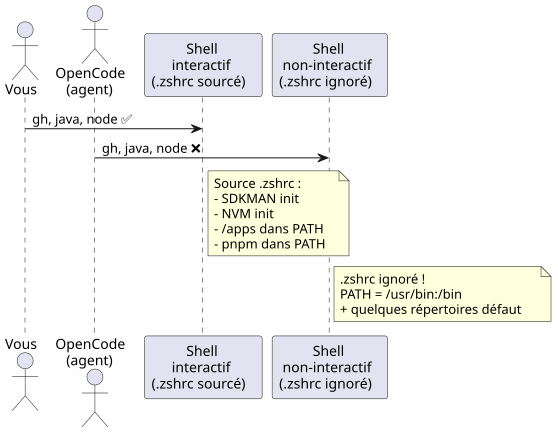
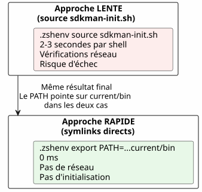
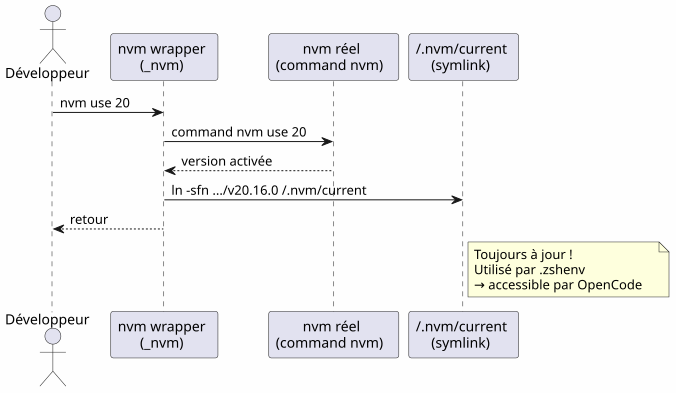
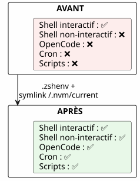

OpenCode et le PATH incomplet : pourquoi vos outils n'étaient pas dans le shell de l'agent
Publié le 25 April 2026
- 1. La scène : un agent aveugle dans un monde d’outils
- 2. Anatomie du bug : deux shells, deux mondes
- 3. Les coupables : .zshrc vs .zshenv
- 4. Diagnostic pas à pas
- 5. La solution : .zshenv + les bons chemins
- 6. Le cas NVM : quand le gestionnaire de versions oublie de laisser une trace
- 7. Tableau récapitulatif des chemins
- 8. Pièges et mitigations
- 9. Leçons apprises
- 10. Vérification finale
- 11. Liens
Vous lancez OpenCode dans votre terminal, tout fonctionne. L’agent tente un gh — introuvable. Un java -version — absent. Un node — nulle part. Pourtant, ces outils sont bien là dans votre shell. Le problème ? OpenCode lance des shells non-interactifs qui ne lisent jamais votre .zshrc. Voici comment diagnostiquer et corriger ça proprement.
1. La scène : un agent aveugle dans un monde d’outils
C’était un mardi soir. Je venais d’installer OpenCode, l’agent IA qui promettait de transformer ma façon de coder. Premier test : lui demander de lister mes dépôts GitHub.
$ opencode
> Utilise gh pour lister mes repos
❌ bash: gh: command not foundÉtrange. gh fonctionnait parfaitement dans mon terminal. J’essaie autre chose :
> Vérifie la version de Java
❌ bash: java: command not foundPuis :
> Lance le build Gradle
❌ bash: gradle: command not foundJava, Gradle, Node, gh — tout était invisible pour l’agent. Mon terminal, lui, voyait tout. Comme si l’agent et moi vivions dans deux mondes parallèles.
J’ai mis des heures à comprendre. Des heures de echo $PATH, de which java, de frustration croissante. J’ai fini par comprendre que le problème n’était pas les outils — c’était le shell. OpenCode, comme tout agent qui lance des sous-processus, travaille dans des shells non-interactifs. Et Zsh, dans ces shells-là, ignore purement et simplement votre .zshrc.
Ce qui suit est le récit complet de ce diagnostic, de la résolution, et de la leçon que j’ai tirée. Si vous utilisez un agent IA — OpenCode, Aider, Cursor, ou même des scripts cron — ce problème vous concernera un jour.
2. Anatomie du bug : deux shells, deux mondes
Quand vous ouvrez un terminal, Zsh le traite comme un shell interactif. Il charge .zshrc, qui initialise tout : SDKMAN, NVM, pnpm, les aliases, votre joli prompt. Votre environnement est complet.
Mais quand OpenCode exécute une commande, il ne lance pas un terminal interactif. Il lance un shell non-interactif — un shell de tâche, sans humain derrière l’écran. Et Zsh, dans ce contexte, saute .zshrc. Il ne lit que .zshenv.
Pourquoi cette distinction existe-t-elle ? Parce qu’un shell non-interactif est conçu pour exécuter des scripts, pas pour servir un utilisateur humain. Charger les aliases, le prompt et les complétons dans un script qui tourne en background serait un gaspillage. Le problème, c’est que votre PATH — l’information la plus critique pour trouver les exécutables — est souvent initialisé dans .zshrc, pas dans .zshenv.

La racine du problème : Zsh ne source .zshrc que pour les shells interactifs. OpenCode, comme tout agent IA qui lance des sous-processus, utilise des shells non-interactifs. Ces shells ne lisent que .zshenv.
3. Les coupables : .zshrc vs .zshenv
Zsh dispose de quatre fichiers d’initialisation, chacun avec un rôle précis. C’est un design élégant — mais c’est aussi le nœud du problème :
| Fichier | Sourcé quand | Rôle | Modifie le PATH ? |
|---|---|---|---|
|
Toujours (interactif + non-interactif + login) |
Variables d’environnement essentielles, PATH |
✅ Oui — c’est SA place |
|
Shells de login uniquement |
Commandes lentes (une fois par session) |
Possible |
|
Shells interactifs uniquement |
Alias, prompt, complétion, outils interactifs |
❌ Pas pour les variables critiques |
|
Shells de login (après .zshrc) |
Messages de bienvenue, finalisation |
Rarement |
Le tableau donne un indice, mais il faut le comprendre en profondeur. Pensez-y comme les pièces d’une maison :
-
.zshenvest le hall d’entrée — tout le monde passe par là, visiteur ou résident. Si vous mettez quelque chose ici, tout shell pourra le voir. -
.zshrcest le salon — seuls les résidents (shells interactifs) y entrent. Les visiteurs (shells non-interactifs) restent dans le hall. -
.zprofileet.zloginsont des pièces spécialisées pour les shells de login (comme quand vous vous connectez en SSH).
Le drame, c’est que la plupart d’entre nous mettons le PATH dans le salon. Et l’agent IA, lui, n’a jamais le droit d’y entrer.
Le problème en un diagramme :

Quand vous ouvrez un terminal, Zsh est interactif : il lit .zshrc, tout fonctionne. Quand OpenCode lance un shell pour exécuter une commande, Zsh est non-interactif : il saute .zshrc, ne lit que .zshenv. Et si .zshenv n’existe pas ou ne contient pas le PATH — c’est le désert.
|
Pourquoi Zsh fait-il ça ? C’est un choix de conception hérité d’Unix. Un shell non-interactif doit être rapide et reproductible. Charger les aliases, les prompts colorés et les initialisations lourdes de SDKMAN dans un script de cron ou un agent IA serait lent et fragile. La séparation est donc logique : |
4. Diagnostic pas à pas
Avant de corriger, il faut comprendre exactement ce qui manque. Voici une méthode de diagnostic reproductible — gardez-la en favoris si vous travaillez avec des agents IA.
4.1. 1. Vérifier le PATH de l’agent
On compare ce que voit votre terminal interactif avec ce que voit un shell non-interactif — c’est-à-dire ce que voit OpenCode.
# Dans votre terminal interactif (tout fonctionne)
echo $PATH | tr ':' '\n' | grep -v '^/usr' | sortRésultat typique :
/home/cheroliv/apps
/home/cheroliv/.nvm/versions/node/v22.19.0/bin
/home/cheroliv/.sdkman/candidates/java/current/bin
/home/cheroliv/.sdkman/candidates/gradle/current/bin
/home/cheroliv/.local/share/pnpm
/home/cheroliv/.local/binMaintenant, simulons ce que voit l’agent — un shell non-interactif :
# Shell non-interactif : pas de .zshrc
zsh -c 'echo $PATH' | tr ':' '\n' | grep -v '^/usr' | sortRésultat :
/home/cheroliv/.local/binCinq chemins sur six ont disparu. L’agent est amputé de 83% de son environnement. C’est comme si on vous demandait de cuisiner sans la moitié de vos ustensiles — vous pourriez faire bouillir de l’eau, mais pas grand-chose d’autre.
|
La commande |
4.2. 2. Identifier ce qui est dans .zshrc mais pas dans .zshenv
Maintenant, on cherche le coupable dans .zshrc. On filtre les lignes qui mentionnent nos outils :
grep -n 'apps\|SDKMAN\|NVM\|PNPM\|PATH' ~/.zshrcOn retrouve typiquement :
119: PATH="/usr/bin/python3:$HOME/apps:$PATH" # ← pas exporté !
171: export NVM_DIR="$HOME/.nvm"
172: [ -s "$NVM_DIR/nvm.sh" ] && \. "$NVM_DIR/nvm.sh" # ← NVM init
176: nvm use --lts --silent # ← active une version
179: export PNPM_HOME="/home/cheroliv/.local/share/pnpm"
187: export SDKMAN_DIR="$HOME/.sdkman"
188: [[ -s "$HOME/.sdkman/bin/sdkman-init.sh" ]] && source "$HOME/.sdkman/bin/sdkman-init.sh"Tout ça est invisible pour OpenCode. Et le PATH de la ligne 119 n’est même pas export`é — il ne quitte jamais le shell courant. C’est un détail technique crucial : une variable sans `export reste locale au shell qui la définit. Les sous-shells — comme ceux lancés par OpenCode — ne l’héritent jamais.
4.3. 3. Vérifier si .zshenv existe
cat ~/.zshenv 2>/dev/null || echo "FICHIER ABSENT"Si la réponse est « FICHIER ABSENT », c’est là que tout se joue.
5. La solution : .zshenv + les bons chemins
La stratégie est simple, mais elle demande de la précision : mettre dans .zshenv uniquement les chemins essentiels, sans sourcer les scripts d’initialisation lourds. On ne déplace pas .zshrc dans .zshenv — on extrait l’essentiel.
5.1. Créer .zshenv avec tous les chemins essentiels
.zshenv est le seul fichier que Zsh garantit de sourcer dans tous les contextes. C’est là que doit aller le PATH.
export SDKMAN_DIR="$HOME/.sdkman"
export NVM_DIR="$HOME/.nvm"
export PNPM_HOME="$HOME/.local/share/pnpm"
export PATH="$HOME/apps:$HOME/.sdkman/candidates/java/current/bin:$HOME/.sdkman/candidates/gradle/current/bin:$HOME/.nvm/current/bin:$PNPM_HOME:$HOME/.local/bin:$HOME/.local/share/JetBrains/Toolbox/scripts:/usr/bin/python3:$PATH"|
On utilise |
5.2. Pourquoi pas source sdkman-init.sh dans .zshenv ?
L’approche la plus tentante serait de simplement reproduire dans .zshenv ce qu’on fait dans .zshrc — sourcer les scripts d’initialisation. On pourrait être tenté de faire :
# ❌ MAUVAISE IDÉE
[[ -s "$HOME/.sdkman/bin/sdkman-init.sh" ]] && source "$HOME/.sdkman/bin/sdkman-init.sh"Problèmes :
-
Lent :
sdkman-init.shfait des résolutions réseau et des vérifications à chaque shell. Dans un shell non-interactif, c’est un coût inutile. -
Fragile : SDKMAN s’attend à un contexte interactif. Son initialisation peut échouer silencieusement dans un pipe ou un sous-shell.
-
Inutile : SDKMAN place ses candidats dans
~/.sdkman/candidates/<tool>/current/bin— des symlinks stables pointant vers la version active. On peut les utiliser directement.
La bonne approche : contourner l’initialisation de SDKMAN et pointer directement sur les symlinks current. C’est la clé de toute la solution : utiliser la structure de fichiers comme contrat, plutôt que le code d’initialisation.

6. Le cas NVM : quand le gestionnaire de versions oublie de laisser une trace
6.1. Le problème NVM
C’est ici que l’enquête m’a mené le plus loin. SDKMAN a un design élégant : quand on fait sdk install java 25.0.2-tem, il crée un symlink :
~/.sdkman/candidates/java/current -> ~/.sdkman/candidates/java/25.0.2-temCe symlink est toujours à jour. Pointez dessus dans .zshenv et vous êtes couvert, quel que soit le shell. Beautiful.
NVM, lui, ne crée rien de tel. Pas de symlink current. Pas de point d’ancrage stable. On doit pointer sur un chemin versionné en dur, qui ressemble à ça :
~/.nvm/versions/node/v22.19.0/bin/nodeAu prochain nvm install 24, ce chemin est mort. Votre .zshenv pointera vers une version qui n’est plus la version active. C’est une bombe à retardement.
|
Pourquoi NVM fait-il ça ? NVM fonctionne en modifiant dynamiquement le PATH à chaque |
6.2. La solution : créer le symlink current pour NVM
Puisque NVM ne le fait pas, on le fait nous-mêmes. Le principe est le même que SDKMAN — un symlink current qui pointe toujours vers la version active. On le crée une fois, puis on l’automatise pour qu’il se mette à jour tout seul.
# Créer le symlink initial
ln -sfn "$HOME/.nvm/versions/node/v22.19.0" "$HOME/.nvm/current"Maintenant, dans .zshenv, on utilise :
$HOME/.nvm/current/binPlutôt que :
# ❌ Chemin en dur — cassé au prochain changement de version
$HOME/.nvm/versions/node/v22.19.0/bin6.3. Automatiser la mise à jour du symlink
Un symlink ne vaut rien s’il ne se met pas à jour. Le symlink current doit se mettre à jour quand on fait nvm use ou nvm install. La solution : un wrapper — une fonction qui enveloppe la vraie commande nvm et met à jour le symlink après chaque appel.
# À la fin de .zshrc, APRÈS le chargement de NVM
nvm use --lts --silent
ln -sfn "$(nvm_version_path "$(nvm current)")" "$NVM_DIR/current"
_nvm() {
command nvm "$@"
local rc=$?
ln -sfn "$(nvm_version_path "$(nvm current)")" "$NVM_DIR/current"
return $rc
}
alias nvm='_nvm'Comment ça marche, en détail :

Le wrapper _nvm appelle la vraie commande nvm, puis met à jour le symlink. L’alias nvm='_nvm' fait en sorte qu’en tapant nvm, on passe par le wrapper. Et à l’initialisation du shell, on fait de même après nvm use --lts.
|
|
7. Tableau récapitulatif des chemins
Avant de passer aux pièges, un résumé visuel de la transformation. Sur la gauche, ce que vous aviez (tout dans .zshrc, invisible pour l’agent). Sur la droite, ce que vous avez maintenant (les chemins essentiels dans .zshenv, visibles partout).
| Outil | Avant (.zshrc seulement) | Après (.zshenv + symlink) | Visible par OpenCode ? |
|---|---|---|---|
|
PATH non exporté dans .zshrc |
|
✅ |
SDKMAN Java |
|
|
✅ |
SDKMAN Gradle |
|
|
✅ |
NVM Node |
|
|
✅ |
pnpm |
|
|
✅ |
JetBrains Toolbox |
Auto-ajouté par Toolbox dans .zshrc |
|
✅ |
Python 3 |
|
Explicitement dans .zshenv |
✅ |
8. Pièges et mitigations
Tout n’est pas parfait avec cette approche. Voici les problèmes que j’ai rencontrés, et comment les contourner.
| Piège | Description | Mitigation |
|---|---|---|
PATH dupliqué |
Si .zshenv et .zshrc ajoutent le même chemin, il apparaît deux fois |
|
NVM : version en dur dans .zshenv |
Mettre |
Utiliser le symlink |
SDKMAN : source sdkman-init.sh dans .zshenv |
Lent, fragile, inutile dans un shell non-interactif |
Utiliser les symlinks |
Alias manquant après modification |
Le wrapper |
Relancer le shell ou |
OpenCode ne voit pas les changements |
L’agent a déjà lancé ses sous-shells avec l’ancien .zshenv |
Redémarrer OpenCode après modification de .zshenv |
.zshenv trop chargé |
Mettre des fonctions lourdes ou des initialisations interactives dans .zshenv |
.zshenv = variables d’environnement + PATH uniquement. Pas de |
9. Leçons apprises
-
.zshrcest interactif,.zshenvest universel — Si une variable doit exister dans tous les shells (agents IA, cron, scripts, IDE), elle va dans.zshenv. Le salon est confortable, mais le hall d’entrée est le seul endroit où tout le monde passe. -
Les gestionnaires de versions ne sont pas égaux — SDKMAN crée des symlinks
currentpar design. NVM non. Il faut combler ce manque manuellement. C’est une leçon importante : avant de configurer votre PATH, vérifiez si votre gestionnaire offre un point d’ancrage stable. -
Ne pas sourcer les init scripts dans .zshenv —
sdkman-init.shetnvm.shsont conçus pour un shell interactif. Ils sont lents et fragiles dans un contexte non-interactif. Les symlinkscurrentsuffisent et sont instantanés. -
Toujours tester en shell non-interactif —
zsh -c 'echo $PATH'simule exactement ce que voit un agent. C’est le test de validation. Sans ce test, vous ne savez pas si votre configuration fonctionne pour les agents. -
Le wrapper pattern est réutilisable — Le même pattern
_nvm+alias nvm='_nvm's’applique à tout outil qui modifie le PATH dynamiquement sans laisser de trace stable. C’est un outil de plus dans votre boîte à idées.

10. Vérification finale
Après avoir créé .zshenv et le symlink NVM, validez que tout fonctionne — dans les deux contextes :
# Shell interactif (votre terminal)
gh --version && java -version && node --version# Shell non-interactif (simulation OpenCode)
zsh -c 'gh --version && java -version && node --version'Les deux doivent réussir. Si oui, votre agent IA verra les mêmes outils que vous. Si non, revenez au diagnostic pas à pas — vous avez probablement oublié un chemin ou le symlink NVM n’est pas à jour.
|
Automatisez ce test. Ajoutez cette vérification dans un script de healthcheck que vous lancez après chaque mise à jour de vos outils. Un |
Un shell non-interactif est comme un invité silencieux : il ne lit que ce qui est affiché sur la porte d’entrée. Si le PATH est dans le salon, il ne le verra jamais.
11. Liens
11.1. Documentation officielle
-
Zsh documentation : Startup Files — La référence officielle sur les fichiers d’initialisation de Zsh. C’est là que tout est expliqué, même si on l’oublie souvent.
-
OpenCode : configuration — Comment configurer OpenCode et son environnement d’exécution.
11.2. Outils mentionnés
-
NVM sur GitHub — Node Version Manager. Gestionnaire de versions Node.js.
-
SDKMAN — site officiel — SDKMAN! Le gestionnaire de versions pour la JVM (Java, Kotlin, Gradle…)
-
SDKMAN : installation — Guide d’installation de SDKMAN.
-
gh— GitHub CLI — L’outil en ligne de commande GitHub, indispensable pour tout développeur. -
Gradle — site officiel — Le système de build que nous installons via SDKMAN.
-
pnpm — site officiel — Le gestionnaire de paquets Node.js rapide et économe en espace.
-
JetBrains Toolbox — Le gestionnaire d’IDE JetBrains, qui ajoute ses scripts au PATH.
11.3. Pour aller plus loin
-
Zsh dotfiles : un guide complet — Article approfondi sur la gestion des dotfiles Zsh.
-
Zsh sur ArchWiki — L’une des meilleures documentations communautaires sur Zsh.
-
NVM issues GitHub — Pour voir les discussions autour du symlink
currentet des problèmes de PATH.